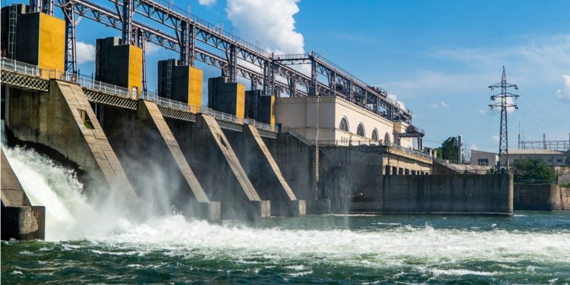
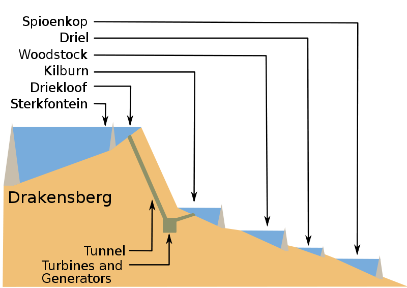
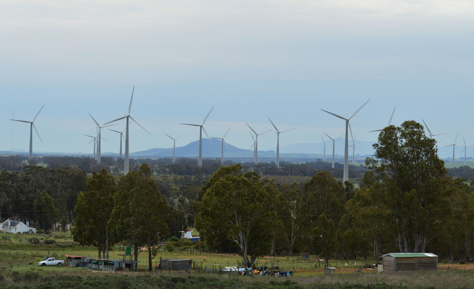

AFRIQUE DU SUD
Le secteur de l'énergie en Afrique du Sud est largement dominé par le charbon qui constitue 91,3 % de la production et 72,4 % de la consommation d'énergie primaire du pays en 2019. L’éolien, qui reste sous-exploité, est une option pour sa transition énergétique et le remplacement du charbon. Le solaire et l’hydroélectrique restent également de bonnes pistes pour cette transition.
POTENTIEL ET ECOSYSTEME ENERGETIQUE EN AFRIQUE DE SUD
Selon le Global Wind Report 2022 publié, lundi 4 avril, sur l’état du marché des énergies éoliennes dans le monde, l'Afrique du Sud est le plus important marché de ce secteur en Afrique subsaharienne. La capacité éolienne actuelle du pays est estimée à environ 3 024 MW et pourrait augmenter de 5,4 GW d’ici 2026, selon le document. L'Afrique du Sud est le plus grand marché de l’énergie éolienne en Afrique subsaharienne, en matière de capacité installée. Troisième économie d'Afrique et l’un des pays les plus peuplés du continent, l'Afrique du Sud dispose d'environ 3 024 MW de capacité éolienne connectée à son réseau, souligne le rapport. Cependant, malgré cette capacité éolienne acquise, les ressources en énergies renouvelables du pays restent sous-exploitées et le bouquet énergétique continue d’être dominé par les énergies fossiles. « Malgré un grand potentiel éolien, et en ressources renouvelables de manière générale, le bouquet énergétique de l'Afrique du Sud est largement dominé par les combustibles fossiles, avec près de 90 % de la production d’électricité provenant du charbon et de la tourbe en 2020. L’éolien est la plus grande source d'énergie propre, fournissant 2,5% d'électricité ». La position de leader de l'Afrique du Sud dans le domaine de l'énergie éolienne sur le continent devrait se poursuivre dans les années à venir. Avec une forte demande locale, des priorités réorientées vers l'énergie durable et des signaux politiques prometteurs, l'énergie éolienne devrait entraîner l'élimination progressive du charbon en Afrique du Sud et contribuer à la création d'une économie à faible émission de carbone.

L'énergie solaire en Afrique du Sud a connu un démarrage tardif mais prometteur, grâce à un ensoleillement parmi les meilleurs au monde et à une politique de soutien initiée en 2010 : le Renewable Energy Independent Power Producer Programme prévoit l'installation de centrales solaires d'une puissance de 8,2 GWc d'ici 2030.
- La filière solaire thermique de l'Afrique du Sud se classait au 19e rang mondial en 2020, avec 0,35 % du total mondial, mais au 1er rang en Afrique.
- La filière photovoltaïque fournissait 1,5 % de la production nationale d'électricité en 2020 ; sa progression a été très rapide de 2014 à 2017, puis en 2020 après deux années de répit ; la mise en service en 2013 et 2014 des premières centrales solaires de grande taille a augmenté fortement la production ; la puissance installée est passée de 41 MWc fin 2012 à 4 172 MWc fin 2020 ; en comparaison, celle de la France est de 10 920 MWc.
- La filière solaire thermodynamique à concentration commence à émerger, avec sept centrales en fonctionnement fin 2018, totalisant 400 MW de puissance, et plusieurs autres en projet. Elle fournissait 0,6 % de l'électricité du pays en 2020.
La carte ci-contre montre que le potentiel solaire de l'Afrique du Sud est particulièrement élevé : la majeure partie du territoire dépasse 2 400 kWh/m², et de vastes régions au centre et au nord atteignent des ensoleillements supérieurs à 2 500 kWh/m², niveau qui ne se retrouvent que dans les parties les plus ensoleillées du Sahara, de l'Arabie et du nord du Chili ; la totalité de l'Afrique du Sud dépasse le niveau de 1 600 kWh/m² qui est celui de la Provence.
L'Afrique du Sud possède un certain potentiel hydro-électrique, bien qu'il soit relativement limité par rapport à d'autres pays africains. La production hydroélectrique de l'Afrique du Sud a atteint 6 TWh en 2021, au 11e rang en Afrique avec 4,1 % de la production africaine, loin derrière la Zambie : 15 TWh et le Mozambique : 15 TWh. La puissance installée des centrales hydroélectriques de l'Afrique du Sud totalisait 3 600 MW fin 2021, soit 9,4 % du total africain, au 3e rang derrière l'Éthiopie (4 074 MW) et l'Angola (3 836 MW), mais 81 % de cette puissance est constituée de centrales de pompage-turbinage : 2 912 MW (86 % du total africain). Le potentiel hydro-électrique de l'Afrique du Sud est principalement concentré dans les régions montagneuses du pays, en particulier dans la province du Cap-Oriental, le Lesotho et le Mpumalanga. Les principaux cours d'eau qui offrent un potentiel hydro-électrique sont l'Orange, le Vaal, le Tugela et le Limpopo. Par exemple, l'année 2016 a été marquée par la mise en service de la centrale de pompage-turbinage d'Ingula (1 332 MW).
-
Connexion au réseau électrique : La connexion au réseau électrique existant peut être un défi majeur. Les infrastructures de transmission et de distribution doivent être adaptées pour intégrer l'électricité produite par les sources d'énergie renouvelable de manière fiable. Des études de raccordement au réseau doivent être effectuées, et des coûts supplémentaires peuvent être engagés pour améliorer ou étendre les infrastructures existantes.
-
Approbations réglementaires et permis : Les projets d'énergie renouvelable doivent obtenir diverses approbations réglementaires et permis, tels que les permis environnementaux, les autorisations foncières et les licences. Le processus peut être complexe, long et impliquer la coordination entre plusieurs autorités et parties prenantes. La navigation à travers le cadre réglementaire peut être un défi pour les développeurs de projets.
-
Financement : Le financement est un défi courant pour les projets d'énergie renouvelable en Afrique du Sud. L'obtention de financements adéquats peut être difficile, en particulier pour les projets de grande envergure nécessitant des investissements importants. La disponibilité de capitaux à long terme et les conditions de prêt favorables peuvent être des obstacles à surmonter. Intermittence et gestion de la variabilité : Les sources d'énergie renouvelable telles que le solaire et l'éolien sont intrinsèquement intermittentes et dépendent des conditions météorologiques. La gestion de la variabilité de la production d'énergie renouvelable et l'intégration efficace dans le réseau électrique peuvent poser des défis techniques.
-
Infrastructure et logistique : La mise en place de l'infrastructure nécessaire pour les projets d'énergie renouvelable peut être un défi logistique. Cela peut inclure le transport des équipements lourds et volumineux, la disponibilité de la main-d'œuvre qualifiée pour la construction et la maintenance, ainsi que la gestion des approvisionnements en matériaux et en équipements.
-
Engagement communautaire et acceptation sociale : L'engagement avec les communautés locales et l'obtention de leur soutien sont essentiels pour la réussite des projets d'énergie renouvelable. Les préoccupations environnementales, les droits fonciers, l'emploi local et les retombées économiques peuvent être des considérations importantes. L'acceptation sociale peut être un défi si les communautés locales ont des inquiétudes ou une opposition envers le projet.
exemples de projets d'energie renouvelable
-

Aménagement hydro-électrique de Drakensberg :
Ensberg, situé dans le massif montagneux du même nom, dans les provinces d'État-Libre et du KwaZulu-Natal, près de la ville de Bergville. Cet aménagement est complexe car ses barrages font aussi partie du Tugela Vaal Transfer Scheme, projet d'irrigation permettant le transfert annuel de 630 millions de m3 d'eau du bassin de la Tugela (au KwaZulu-Natal) vers le bassin du Vaal (dans l'État-Libre) au nord. Construit de 1974 à 1981, il comprend quatre barrages sur la rivière Tugela et constitue un équipement de pompage-turbinage d'une puissance de 1 000 MW, dont le rôle est très important pour la régulation de l'équilibre offre-demande d'électricité, grâce à sa capacité de stockage de 27,6 GWh sous la forme d'un volume de stockage de 27 millions de m3 qui lui permet de produire à pleine puissance pendant 10 heures par jour (pendant les heures de forte demande) en turbinant, sous une hauteur de chute de 500 m, l'eau pompée pendant 9 heures par jour (heures creuses) du réservoir inférieur de Kilburn vers le réservoir supérieur de Driekloof. Sa production moyenne sur les trois dernières années a été de 2 041 GWh/an moyennant une consommation d'énergie de 2 766 GWh/an pour le pompage.Un dispositif avec plusieurs barrages d'accumulation du Drakensberg Pumped Storage Scheme (en) en Afrique du Sud.
-
Le parc éolien de Sere
Il a été mis en service en avril 2015 par la compagnie électrique nationale Eskom avec un prêt de la Banque africaine de développement, sur la côte ouest à 300 km au nord de la ville du Cap ; sa puissance de 106 MW (46 turbines Siemens de 2,3 MW) lui permet de produire 240 à 300 GWh par an (facteur de charge : 26 à 32 %).
La centrale éolienne de SERE qui illumine près de 120 000 habitations en Afrique du Sud
-

Le parc éolien de Gouda :
Il a été inauguré en septembre 2016 par Acciona à 135 km au nord-est du Cap avec 46 turbines d'une puissance totale de 138 MW ; son originalité est que les tours qui portent les pales sont en béton et non en acier, afin d'accroître le contenu local de l'investissement. Depuis le début du programme d'énergies renouvelables lancé par le Department of Energy, le prix de l'énergie éolienne a chuté de 1,14 rand/kWh lors du premier appel d'offres à une moyenne de 0,74 rand/kWh lors du dernier appel d'offres.Gouda Wind Farm
Programmes et politiques reglementaires en vigueur
- Eskom Holdings SOC Ltd : Eskom est la principale compagnie d'électricité en Afrique du Sud. C'est une entreprise publique qui détient le monopole de la production, de la transmission et de la distribution d'électricité dans le pays. Eskom exploite un certain nombre de centrales électriques à charbon, nucléaires et hydroélectriques, ainsi que des parcs éoliens et solaires.
- PetroSA (Petrolium Oil and Gas Corporation of South Africa) : PetroSA est la compagnie nationale pétrolière et gazière en Afrique du Sud. Elle est responsable de l'exploration, de la production et de la commercialisation des hydrocarbures dans le pays.
- Central Energy Fund (CEF) : Le Central Energy Fund est une société d'État qui joue un rôle important dans la gestion des ressources énergétiques en Afrique du Sud. Il supervise et gère plusieurs filiales, dont PetroSA, Strategic Fuel Fund (SFF) et iGas.
- South African Nuclear Energy Corporation (NECSA) : NECSA est responsable du développement et de la gestion du programme nucléaire de l'Afrique du Sud. Elle s'occupe notamment de la recherche, de la production de radioisotopes, de la gestion des déchets nucléaires et de la promotion de l'utilisation pacifique de l'énergie nucléaire.
- Loi de l'électricité (Electricity Regulation Act) : Cette loi établit le cadre juridique général pour la réglementation du secteur de l'électricité en Afrique du Sud, y compris les énergies renouvelables. Elle prévoit la réglementation de la production, de la transmission, de la distribution et de l'utilisation de l'électricité dans le pays.
- Le Programme national d'approvisionnement indépendant en énergie renouvelable (REIPPP) est un exemple de programme conçu et mis en œuvre localement pour permettre un approvisionnement accru en énergie renouvelable et lutter contre le changement climatique. En novembre 2021, l'Afrique du Sud a alloué 2,58 GW de projets éoliens et solaires dans le cadre de l'enchère REIPPP, qui a attiré un investissement de 3,25 milliards de dollars.
- Programme d'approvisionnement en énergie indépendant (Independent Power Producer, IPP) : Ce programme a été lancé pour encourager l'investissement privé dans les énergies renouvelables en Afrique du Sud. Il permet aux producteurs indépendants d'électricité d'entrer dans des contrats d'achat d'électricité à long terme avec le gouvernement.
- Loi sur la promotion des énergies renouvelables et de l'efficacité énergétique (Renewable Energy Independent Power Producer Procurement Programme, REIPPPP) : Cette loi spécifique concerne le programme d'approvisionnement en énergie indépendant pour les énergies renouvelables. Elle établit les critères et les procédures pour les appels d'offres, l'évaluation des projets, la conclusion de contrats et autres aspects liés à la participation des producteurs indépendants. Ces lois et politiques constituent un cadre réglementaire général pour le développement des énergies renouvelables en Afrique du Sud.
- Le gouvernement sud-africain souhaite développer davantage de capacité énergétique en raison de la grave inadéquation entre l'offre et la demande d'électricité et, par conséquent, a adopté plusieurs mesures politiques.
- De plus, en septembre 2020, le régulateur national de l'énergie d'Afrique du Sud a approuvé un plan gouvernemental d'appel d'offres pour près de 12 GW de capacité de production d'électricité. La décision devrait permettre au gouvernement d'acquérir une capacité de production conformément au plan de ressources intégré (IRP 2019). L'IRP vise jusqu'à 6 GW de nouveau solaire à grande échelle d'ici 2030, ainsi que 6 GW de capacité de production distribuée.
- Le département prévoit d'allouer un gigawatt d'énergie solaire par an en 2023, 2025 et 2028-30, sans nouvelles capacités solaires prévues en 2024, 2026 ou 2027. Si ces attentes se réalisent, l'Afrique du Sud disposera de 8,28 GW d'électricité capacité solaire à grande échelle en 2030, le PV ne fournissant que 10,5 % de son mix énergétique. La capacité éolienne devrait passer d'environ 1,98 GW à 17,7 GW d'ici la fin de la décennie, pour représenter 22,5% du mix énergétique, selon le Plan intégré des ressources.
Dépenses et main d'oeuvre
- Études de faisabilité et de pré-développement : Avant de démarrer un projet d'énergie renouvelable, il est important de mener des études de faisabilité approfondies pour évaluer la viabilité technique, économique et environnementale du projet. Cela peut inclure des études de vent, de ressources solaires, d'évaluation environnementale, d'accès au réseau électrique, etc. Les coûts associés à ces études peuvent varier en fonction de la complexité et de la portée du projet.
- Investissement en capital : La réalisation d'un projet d'énergie renouvelable nécessite un investissement en capital pour l'acquisition de terrains, l'installation des équipements, la construction des infrastructures, les travaux civils, les systèmes de gestion de l'énergie, etc. Les coûts d'investissement varient considérablement en fonction de la technologie choisie (solaire, éolien, biomasse, etc.) et de la capacité du projet.
- Coûts de raccordement au réseau : Les projets d'énergie renouvelable doivent être raccordés au réseau électrique existant. Les coûts de raccordement peuvent inclure les travaux de construction des lignes de transmission, les transformateurs, les équipements de commutation, les coûts d'étude de raccordement, les frais de permis, etc.
- Coûts opérationnels et de maintenance : Une fois le projet en fonctionnement, il y aura des coûts opérationnels et de maintenance réguliers. Cela comprend les coûts de personnel, les frais de maintenance des équipements, les assurances, les coûts de surveillance, les coûts de gestion des ressources, etc.
- Tarifs d'achat d'électricité : En Afrique du Sud, les producteurs indépendants d'électricité peuvent bénéficier de contrats d'achat d'électricité à long terme avec le gouvernement. Les tarifs d'achat d'électricité peuvent varier en fonction de la technologie, de la capacité du projet et des négociations contractuelles.
Ci-joint un exemple d’étude et stratégie de financement du projet de centrale électrique de Medupi propose par la Banque Africaine de developpement: click here
démarche & quelques étapes clés
-
Investir dans le domaine des énergies renouvelables en Afrique du Sud nécessite une bonne compréhension du marché local et des étapes clés à suivre.
Voici les différentes étapes pour bien investir dans ce secteur :
-
1. Faire une analyse du marché :
Avant de commencer, il est essentiel de comprendre le marché des énergies renouvelables en Afrique du Sud. Cela inclut l'étude des politiques et réglementations gouvernementales, des incitations fiscales, des tarifs d'achat, de la concurrence, ainsi que des besoins énergétiques et des opportunités d'investissement. -
2. Identifier les opportunités :
Une fois que vous avez une vision globale du marché, identifiez les opportunités d'investissement spécifiques. Cela peut inclure des projets solaires, éoliens, hydrauliques, biomasse, ou d'autres formes d'énergies renouvelables. Aidez vous de notre plateforme pour decouvrir de potentiel energetique du pays. -
3. Établir des partenariats :
Trouvez des partenaires locaux, tels que des développeurs de projets, des entreprises spécialisées dans les énergies renouvelables, des fournisseurs de technologies, des institutions financières et des acteurs gouvernementaux. Ces partenariats peuvent aider à obtenir des informations précieuses, à faciliter les démarches administratives et à accéder aux financements. -
4. Effectuer des études de faisabilité :
Avant d'investir, menez des études de faisabilité approfondies pour évaluer la viabilité technique, économique et environnementale du projet. Cela implique de collecter des données sur le potentiel solaire ou éolien, d'analyser les coûts et les revenus attendus, d'évaluer les risques et de prendre en compte les aspects réglementaires. -
Entrez en contact avec la National Energy Regulator of South Africa (NERSA). Visitez leur site web: click here
5. Obtenir les autorisations et les permis :
Assurez-vous de respecter toutes les exigences réglementaires et légales pour l'installation et l'exploitation d'un projet d'énergie renouvelable. Cela peut inclure l'obtention de licences, de permis environnementaux, de contrats de rachat d'électricité, ainsi que le respect des normes de raccordement au réseau électrique. -
6. Financement du projet :
Identifiez les sources de financement disponibles, telles que les institutions financières, les fonds d'investissement, les subventions gouvernementales ou les partenariats public-privé. Préparez un plan d'affaires solide pour convaincre les investisseurs potentiels de la rentabilité du projet. -
7. Construction et exploitation :
Une fois que le financement est sécurisé, procédez à la construction du projet et assurez-vous de respecter les normes de qualité et de sécurité. Une fois l'installation terminée, gérez l'exploitation et la maintenance du projet pour optimiser son rendement. -
8. Suivi et évaluation :
Effectuez un suivi régulier des performances du projet et évaluez sa rentabilité à long terme. Cela vous permettra d'identifier d'éventuelles améliorations et de prendre des décisions informées pour maximiser les rendements sur investissement. Ci-joint un exemple de fiche technique d’étude et la demarche adopte propose par la Banque Africaine de developpement: click hereliens & ressources supplementaires
-
South African Renewable Energy Council (SAREC) (Afrique du Sud) :
Site web -
Department of Mineral Resources and Energy (DMRE) (Afrique du Sud) :
Site web -
Independent Power Producers Office (IPPO) (Afrique du Sud) :
Site web -
Council for Scientific and Industrial Research (CSIR) (Afrique du Sud) :
Site web -
Fiche de synthese: Les énergies renouvelables en Afrique du Sud :
Telecharger la fiche -
PROJET D’INVESTISSEMENT DANS L’ÉNERGIE RENOUVELABLE D’ESKOM:
Telecharger la fiche
-